Это восстановленная из WebArchive информация. Некоторых схем в данном тексте нет.
Стандартная минимальная распиновка разъема VGA:
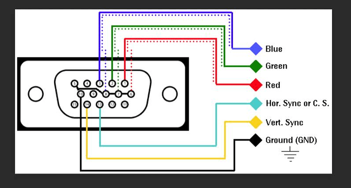
Где:
Как сделать переходник с rca на vga — Rc-garaj.ru
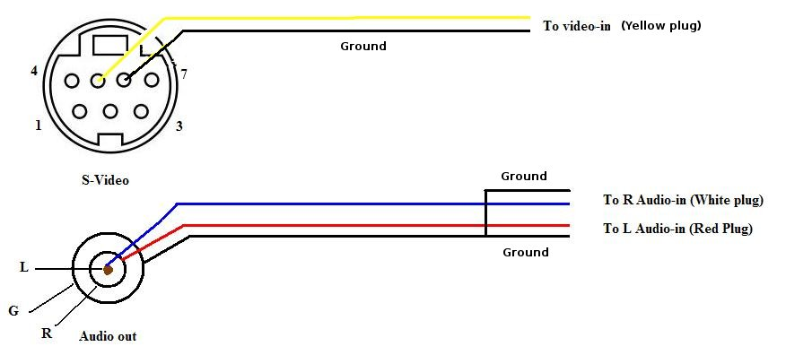
Конвертер видео в vga
Как сделать переходник с rca на vga — Rc-garaj.ru
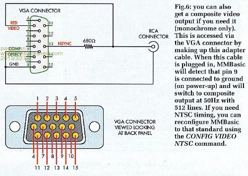
Тюльпан в vga схема — Преобразование Video в VGA или монитор как телевизор
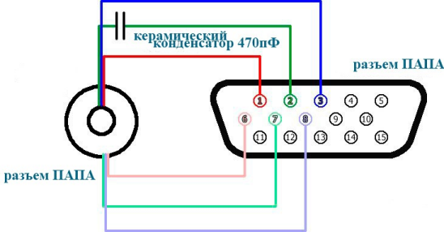
В вышеприведенной картинке:

Vga в s video — VGA Википедия

Как самому сделать кабель vga rca — Sc-construction.ru

Переходник vga s-video схема
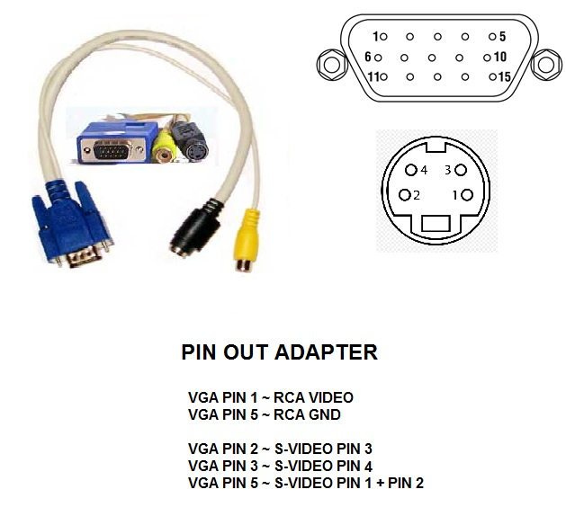
Як зробити перехідник vga тюльпан. Composite to vga schematic.
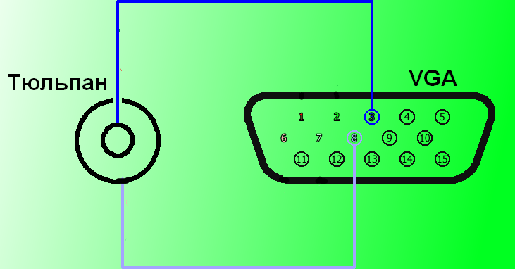
Переходник usb vga схема — Estamsk.ru
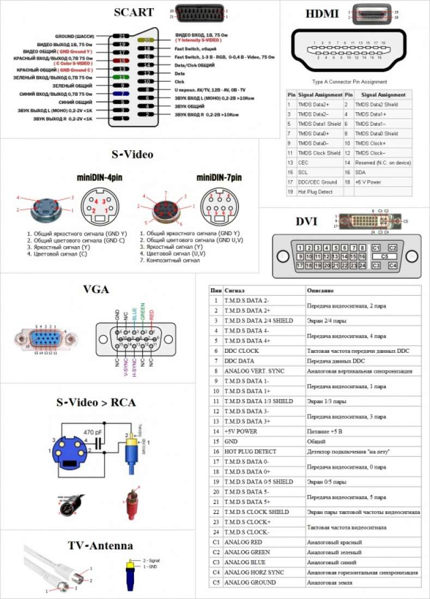
Переходник vga rca своими руками схема

VGA RCA переходник своими руками: схема :: SYL.ru
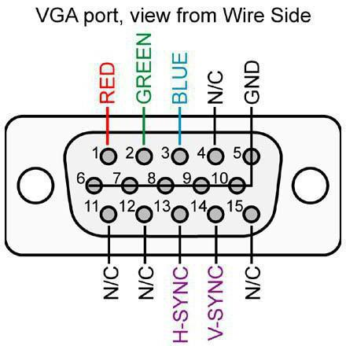
Vga To Rca Video Cable Diagram — vga breakout cable. with screenshot — 05302012 — 100351 pm.png Swit Rol

Vga тюльпан своими руками :: Файловый обменник сети :: kr-baza.ru

Схема кабеля vga rca
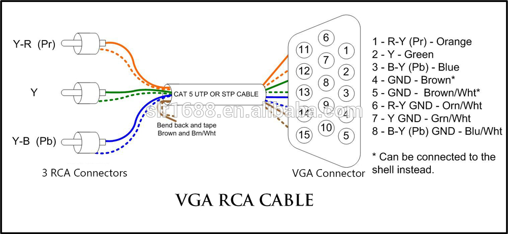
Как заменить vga адаптер — Ремонт СПБ

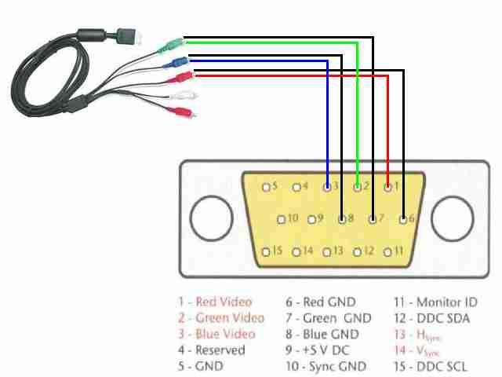
Переходник rca в vga своими руками — Rc-garaj.ru

Все изображения "Кабель Vga Тюльпан Схема" / mipics.ru

Схема преобразователя rca в vga
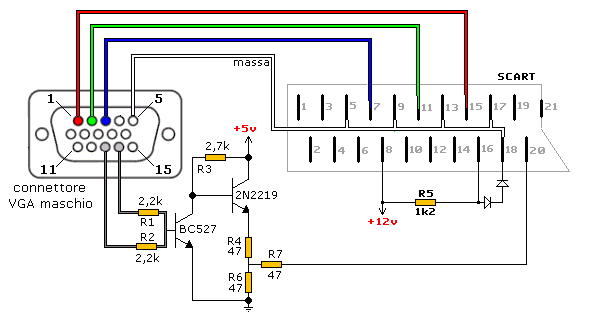
Переходник vga scart своими руками схема